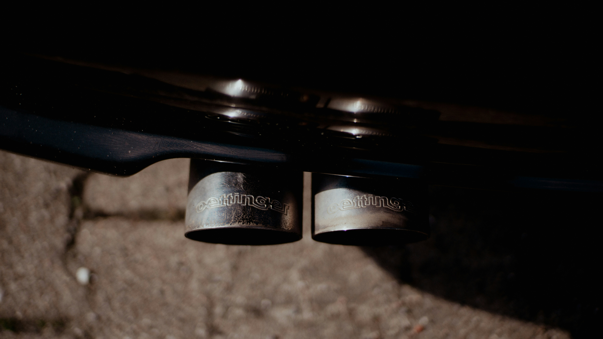
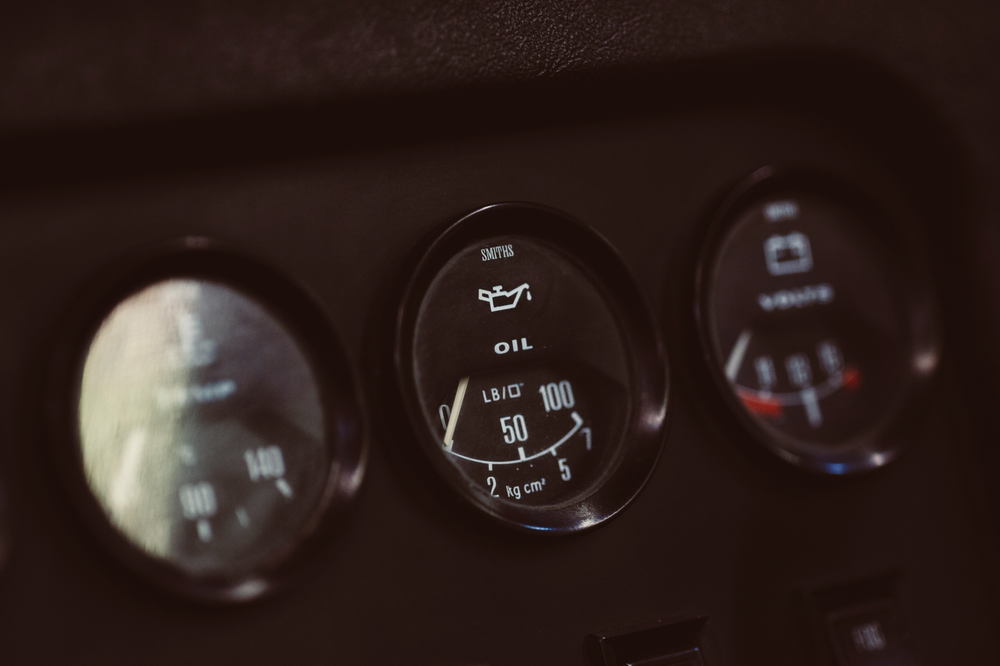
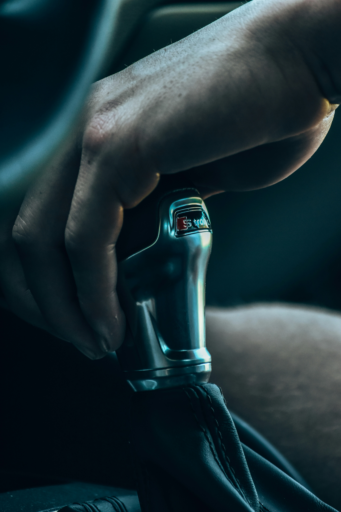

🎥 Video Tutorials
🔧 Fix it at home
👂 Inspect your car noise
🧼 Car maintenance you should do at home
🔉 Sound Examples
📄 PDF Guides

How to Replace Brake Pads
A quick video on safely changing brake pads at home.
▶️ Watch on YouTube

Engine Knocking
Listen to this knocking engine sound and compare it to yours.
Clunking in Suspension
This guide explains common causes of clunking under the car.
📄 View PDF
Squealing Brake Pads
Squealing often means worn pads or metal-on-metal contact.
Ticking from Valve Lifters
PDF guide for diagnosing ticking noises related to valve lifters.
📄 View PDF

Rattling Muffler
Sound of a loose or rusted muffler shaking under the car.

Hissing from Vacuum Leak
Listen to this classic vacuum leak hissing sound example.

Air Intake Whistle
Watch how intake issues create whistling sounds & fix airflow.
▶️ Watch on YouTube
Steering Noises (PDF)
Guide to diagnose groaning or whining sounds in steering systems.
📄 View PDF

Ticking from Valve Lifters
Typical ticking from worn or dirty valve lifters.
Grinding Brakes PDF
Understand the signs of severe brake wear and rotor damage.
📄 View PDF

Gear Grinding Explained
Bad shifting habits and how to avoid synchro damage.
▶️ Watch on YouTube
Buzzing Noise
PDF guide for diagnosing buzzing noise.
📄 View PDF
Clicking Noise from CV Joints
PDF guide for diagnosing clicking noise.
📄 View PDF
Whistling Noises from Vacuum Leaks
PDF guide for diagnosing whistling noises.
📄 View PDF